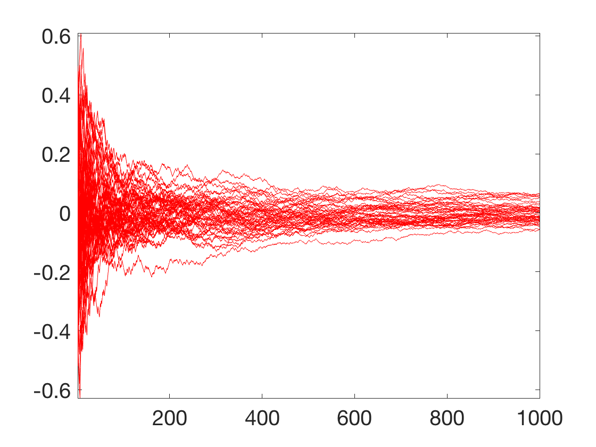
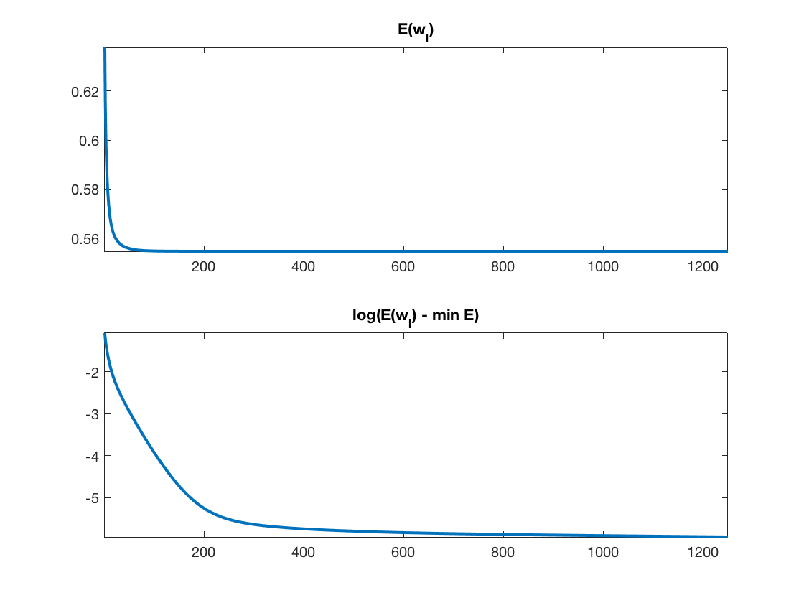
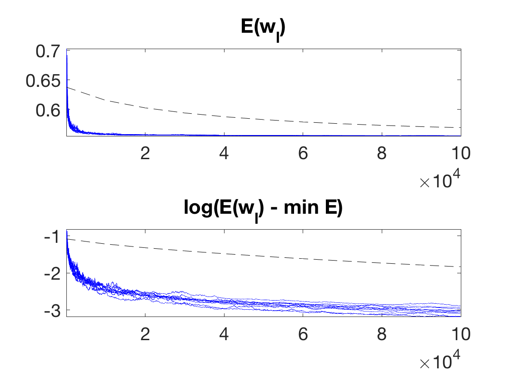
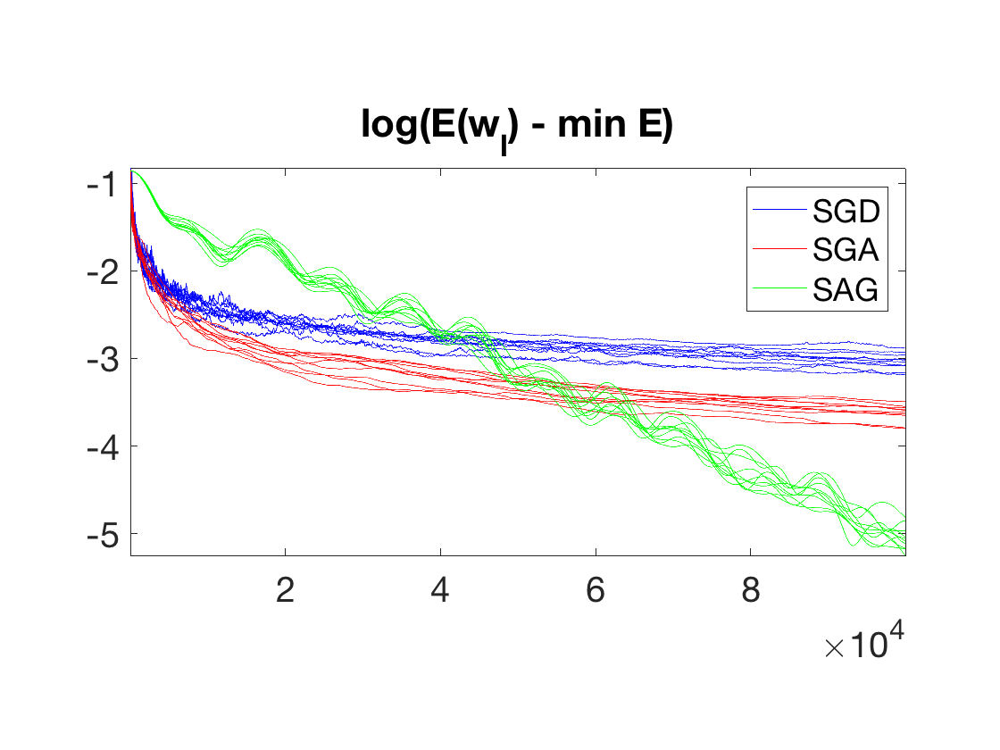

Stochastic Gradient descent
This tour details Stochastic Gradient Descent, applied to the binary logistic classification problem.
Contents
We recommend that after doing this Numerical Tours, you apply it to your own data, for instance using a dataset from LibSVM.
Disclaimer: these machine learning tours are intended to be overly-simplistic implementations and applications of baseline machine learning methods. For more advanced uses and implementations, we recommend to use a state-of-the-art library, the most well known being Scikit-Learn
Installing toolboxes and setting up the path.
You need to download the following files: general toolbox.
You need to unzip these toolboxes in your working directory, so that you have toolbox_general in your directory.
For Scilab user: you must replace the Matlab comment '%' by its Scilab counterpart '//'.
Recommandation: You should create a text file named for instance numericaltour.sce (in Scilab) or numericaltour.m (in Matlab) to write all the Scilab/Matlab command you want to execute. Then, simply run exec('numericaltour.sce'); (in Scilab) or numericaltour; (in Matlab) to run the commands.
Execute this line only if you are using Matlab.
getd = @(p)path(p,path); % scilab users must *not* execute this
Then you can add the toolboxes to the path.
getd('toolbox_general/');
First define a few helpers.
SetAR = @(ar)set(gca, 'PlotBoxAspectRatio', [1 ar 1], 'FontSize', 20); Xm = @(X)X-repmat(mean(X,1), [size(X,1) 1]); Cov = @(X)Xm(X)'*Xm(X);
Dataset Loading
We load a subset of the dataset Quantum Physics Dataset of \(n=10000\) features in dimension \(78\). The goal in this task is to learn a classification rule that differentiates between two types of particles generated in high energy collider experiments.
Load the dataset. Randomly permute it. Separate the features \(X\) from the data \(y\) to predict information.
name = 'quantum'; load(['ml-' name]); A = A(randperm(size(A,1)),:); X = A(:,1:end-1); y = A(:,end);
Set the classes indexes to be \(\{-1,+1\}\).
y = rescale(y,-1,1);
Remove empty features, normalize \(X\).
I = find(mean(abs(X))>1e-1); X = X(:,I); X = X-repmat(mean(X),[size(X,1),1]); X = X ./ repmat( sqrt(sum(X.^2)/size(X,1)), [size(X,1),1] );
\(n\) is the number of samples, \(p\) is the dimensionality of the features,
[n,p] = size(X);
Plot the classes.
I = randperm(n); I = I(1:500); options.disp_dim = 3; clf; plot_multiclasses(X(I,:),y(I),options);
Batch Gradient Descent (BGD)
We first test the usual (batch) gradient descent (BGD) on the problem of supervised logistic classification.
We refer to the dedicated numerical tour on logistic classification for background and more details about the derivations of the energy and its gradient.
Logistic classification aims at solving the following convex program \[ \umin{w} E(w) \eqdef \frac{1}{n} \sum_{i=1}^n L(\dotp{x_i}{w},y_i) \] where the logistic loss reads \[ L( s,y ) \eqdef \log( 1+\exp(-sy) ) \]
Define energy \(E\) and its gradient \(\nabla E\).
L = @(s,y)1/n * sum( log( 1 + exp(-s.*y) ) ); E = @(w,X,y)L(X*w,y); theta = @(v)1 ./ (1+exp(-v)); nablaL = @(s,r)- 1/n * y.* theta(-s.*y); nablaE = @(w,X,y)X'*nablaL(X*w,y);
Exercice 1: (check the solution) Implement a gradient descent \[ w_{\ell+1} = w_\ell - \tau_\ell \nabla E(w_\ell). \] Monitor the energy decay. Test different step size, and compare with the theory (in particular plot in log domain to illustrate the linear rate).
exo1;
Stochastic Gradient Descent (SGD)
As any empirical risk minimization procedure, the logistic classification minimization problem can be written as \[ \umin{w} E(w) = \frac{1}{n} \sum_i E_i(w) \qwhereq E_i(w) = L(\dotp{x_i}{w},y_i). \]
For very large \(n\) (which could in theory even be infinite, in which case the sum needs to be replaced by an expectation or equivalenty an integral), computing \(\nabla E\) is prohebitive. It is possible instead to use a stochastic gradient descent (SGD) scheme \[ w_{\ell+1} = w_\ell - \tau_\ell \nabla E_{i(\ell)}(w_\ell) \] where, for each iteration index \(\ell\), \(i(\ell)\) is drawn uniformly at random in \( \{1,\ldots,n\} \).
Note that here \[ \nabla E_{i}(w) = x_i \nabla L( \dotp{x_i}{w}, y_i ) \qwhereq \nabla L(u,v) = v \odot \th(-u) \]
nablaEi = @(w,i)-y(i) .* X(i,:)' * theta( -y(i) * (X(i,:)*w) );
Note that each step of a batch gradient descent has complexity \(O(np)\), while a step of SGD only has complexity \(O(p)\). SGD is thus advantageous when \(n\) is very large, and one cannot afford to do several passes through the data. In some situation, SGD can provide accurate results even with \(\ell \ll n\), exploiting redundancy between the samples.
A crucial question is the choice of step size schedule \(\tau_\ell\). It must tends to 0 in order to cancel the noise induced on the gradient by the stochastic sampling. But it should not go too fast to zero in order for the method to keep converging.
A typical schedule that ensures both properties is to have asymptically \(\tau_\ell \sim \ell^{-1}\) for \(\ell\rightarrow +\infty\). We thus propose to use \[ \tau_\ell \eqdef \frac{\tau_0}{1 + \ell/\ell_0} \] where \(\ell_0\) indicates roughly the number of iterations serving as a "warmup" phase.
One can prove the following convergence result \[ \EE( E(w_\ell) ) - E(w^\star) = O\pa{ \frac{1}{\sqrt{\ell}} }, \] where \(\EE\) indicates an expectation with respect to the i.i.d. sampling performed at each iteration.
Select default values for \( (\ell_0,\tau_0) \).
l0 = 100; tau0 = .05;
Exercice 2: (check the solution) Perform the Stochastic gradient descent. Display the evolution of the energy \(E(w_\ell)\). One can overlay on top (black dashed curve) the convergence of the batch gradient descent, with a carefull scaling of the number of iteration to account for the fact that the complexity of a batch iteration is \(n\) times larger. Perform several runs to illustrate the probabilistic nature of the method. Explore different values for \( (\ell_0,\tau_0) \).
exo2;
Stochastic Gradient Descent with Averaging (SGA)
Stochastic gradient descent is slow because of the fast decay of \(\tau_\ell\) toward zero.
To improve somehow the convergence speed, it is possible to average the past iterate, i.e. run a "classical" SGD on auxiliary variables \( (\tilde w_\ell)_\ell\) \[ \tilde w_{\ell+1} = \tilde w_\ell - \tau_\ell \nabla E_{i(\ell)}(\tilde w_\ell) \] and output as estimated weight vector the average \[ w_\ell \eqdef \frac{1}{\ell} \sum_{k=1}^\ell \tilde w_\ell. \] This defines the Stochastic Gradient Descent with Averaging (SGA) algorithm.
Note that it is possible to avoid explicitely storing all the iterates by simply updating a running average as follow \[ w_{\ell+1} = \frac{1}{\ell} \tilde w_\ell + \frac{\ell-1}{\ell} w_\ell. \]
In this case, a typical choice of decay is rather of the form \[ \tau_\ell \eqdef \frac{\tau_0}{1 + \sqrt{\ell/\ell_0}}. \] Notice that the step size now goes much slower to 0, at rate \(\ell^{-1/2}\).
Typically, because the averaging stabilizes the iterates, the choice of \((\ell_0,\tau_0)\) is less important than for SGD.
Bach proves that for logistic classification, it leads to a faster convergence (the constant involved are smaller) than SGD, since on contrast to SGD, SGA is adaptive to the local strong convexity of \(E\).
Exercice 3: (check the solution) Implement the Stochastic gradient descent with averaging. Display the evolution of the energy \(E(w_\ell)\).
exo3;

Stochastic Averaged Gradient Descent (SAG)
For problem size \(n\) where the dataset (of size \(n \times p\)) can fully fit into memory, it is possible to further improve the SGA method by bookeeping the previous gradient. This gives rise to the Stochastic Averaged Gradient Descent (SAG) algorithm.
We stored all the previously computed gradient in \( (G^i)_{i=1}^n \), which necessitate \(n \times p\) memory. The iterates are defined by using a proxy \(g\) for the batch gradient, which is progressively enhanced during the iterates.
The algorithm reads \[ h \leftarrow \nabla E_{i(\ell)}(\tilde w_\ell), \] \[ g \leftarrow g - G^{i(\ell)} + h, \] \[ G^{i(\ell)} \leftarrow h, \] \[ w_{\ell+1} = w_\ell - \tau g. \] Note that in contrast to SGD and SGA, this method uses a fixed step size \(\tau\). Similarely to the BGD, in order to ensure convergence, the step size \(\tau\) should be of the order of \(1/L\) where \(L\) is the Lipschitz constant of \(E\).
This algorithm improves over SGA and BGD since it has a convergence rate of \(O(1/\ell\). Furthermore, in the presence of strong convexity (for instance when \(X\) is injective for logistic classification), it has a linear convergence rate, i.e. \[ \EE( E(w_\ell) ) - E(w^\star) = O\pa{ \rho^\ell }, \] for some \(0 < \rho < 1\).
Note that this improvement over SGD and SGA is made possible only because SAG explictely use the fact that \(n\) is finite (while SGD and SGA can be extended to infinite \(n\) and more general minimization of expectations).
Exercice 4: (check the solution) Implement SAG. Display the evolution of the energy \(E(w_\ell)\).
exo4;